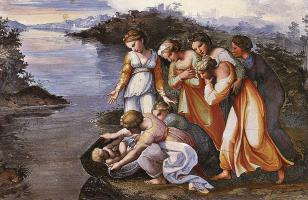
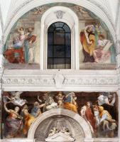
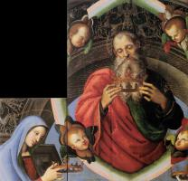
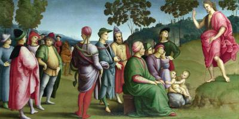
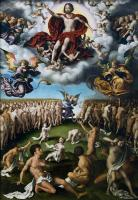
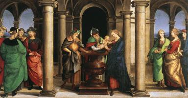
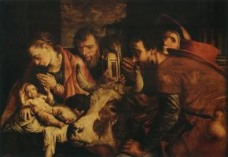
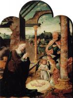
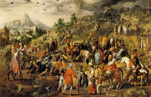
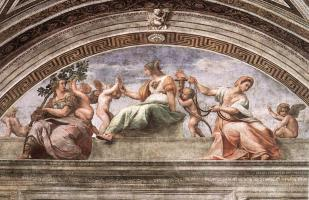

Christian Art: Русский
Старый Завет

Адам и Ева (14)

Давид (3)

Моисей (2)
Моисей (2)

Ной (3)

Пророки (25)
Пророки (25)

Соломон (2)

Сотворение мира (7)

Сюжети Старого Завета (8)
Новый Завет

Апостол Павел (5)

Апостол Петр (7)

Бог Отец (3)
Бог Отец (3)

Иоанн Креститель (9)
Иоанн Креститель (9)

Пятидесятница (4)

Страшный суд (6)
Страшный суд (6)

Сюжеты Нового Завета (12)
Богородица

Бегство в Египет (11)

Благовещение (17)

Богородица и Дитя (126)

Коронация Богородицы (7)

Портрет Богородицы (5)

Родители Богородицы (7)

Сцены из жизни Богородицы (15)

Успение (13)
Иисус Христос

Введение в храм (7)
Введение в храм (7)

Вознесение (3)

Воскресение (18)

Вход Господний в Иерусалим (2)

Крещение Господне (1)

Муж скорбей (2)

Оплакивание Христа (22)

Поклонение Дитю (20)
Поклонение Дитю (20)

Портрет Иисуса (12)

Преображение (3)

Притчи Иисуса (3)

Распятие (31)

Рождество (8)
Рождество (8)

Служение Иисуса (25)

Страсти Христовы (33)
Страсти Христовы (33)

Тайная вечеря (5)
Христианство

Ад (2)

Ангелы (12)

Добродетели (10)
Добродетели (10)

Пороки (8)

Рай (1)

Святой Франциск (43)

Святые (116)

Троица (1)

Церковь (23)
Художники
А

Ангел Акотантос (16)
Альбрехт Альтдорфер (24)
Фра Беато Анджелико (146)

Ульрих Апт (2)
Питер Артсен (8)
Б
Ханс Бальдунг (26)

Ян де Бир (6)

Дерик Бэгерт (7)
Д

Джотто (162)

Дуччо (80)
К
М

Микеланджело (36)
Р

Рафаэль (117)

Андрей Рицос (9)